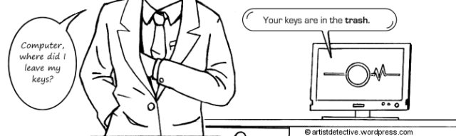

Introduction
Winograd schema challenge was proposed by Hector Levesque, as an improvement to the Turing test. Like Turing test, it also measures machine intelligence and is based on the understanding of natural language. The test mainly consists of series of questions, with pair of sentences that differ in only one or two words with ambiguous pronouns. And based on the structure of the sentence and proper reasoning, the machine has to guess the correct answer. In order to predict the accurate answer, the machine is believed to require human level intelligence.
Story of Origin
As we know, the famous Turing Test was indented to detect whether a machine was capable of human-level intelligence by imitating a human being. However, it was criticized by many for its structure, as in order to succeed the machine has to fool the interrogator, which is a form of deception. And therefore, it was considered as inadequate of judging a machine’s intelligence.
Challenge highlights
Though, the foundation of Winograd schema is based on Turing’s idea of intelligent behavior, the test is basically a binary decision problem that follows a definite pattern. The test requires reasoning and knowledge of the textual context of the questions. The schema basically consists of following features:
- One of the entities mentioned in question is referenced by pronoun.
- The question is regarding determining the referent of the pronoun.
- A particular word mentioned in the sentence when replaced with alternate word changes the answer.
As seen in the famous example given by Terry Winograd, after whom the test is named:
“The city councilmen refused the demonstrators a permit because they [feared/advocated] violence.”
Question: Who feared violence?
Answer 0: the town councilmen
Answer 1: the angry demonstrators
We have to choose between the “councilmen” and the “demonstrators”. But the trick is if the instance refers to “feared”, then “they'' presumably refers to the city council; if it is “advocated” then “they'' presumably refers to the demonstrators.
Conclusive thoughts
If I compare WS challenge with Turing test, I prefer the clarity and simplicity of Winograd schema. The test sticks to a definite structure and provide binary options to choose from. The most interesting feature is, that the test does not even requires an expert to judge the performance of the person or machine undertaking the test. Although, the only drawback with this test is - the dataset to be used for preparing the questions, which have to be designed a certain way, to be applied reasoning. But I wonder if this test is an adequate measure of a machine’s intelligence? As it only captures the understanding of natural language processing, the knowledge required to pass this test, is only in context of the sentences. If one can draw the meaning of words and have sound knowledge of the domain of questionaire, it is not a difficult task to crack the Winograd challenge.